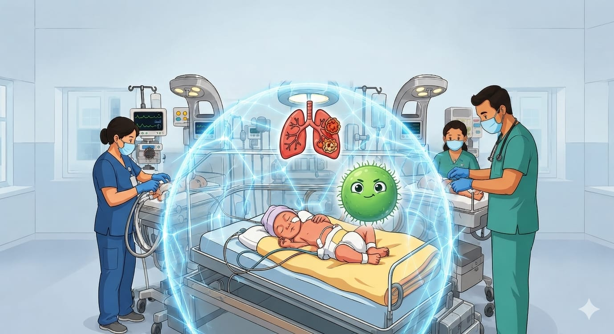

Patogénesis del biofilm, clasificación, diagnóstico, tratamiento, modos ventilatorios, aspiración de secreciones y estrategias de prevención en neonatos y lactantes menores de 1 año.
La intubación endotraqueal salva vidas, pero anula de inmediato las defensas respiratorias críticas del neonato:
| Tipo | Definición | Características específicas | Agentes más frecuentes |
|---|---|---|---|
| Comunitaria (NAC) | Presente o en incubación al ingreso; aparece antes de 48 h de hospitalización | < 3 meses: más bacteriana ≥ 3 meses: predominio viral (VRS, Influenza) |
Virales: VRS, Influenza, Parainfluenza Bacteriana: S. pneumoniae, S. agalactiae, S. aureus |
| Intrahospitalaria (NIH) | Se presenta ≥ 48 h después del ingreso; no estaba presente al ingresar | Mayor riesgo en prematuros < 1,500 g, con dispositivos invasivos o antibióticos previos | Gram negativos: Klebsiella, E. coli, Pseudomonas, Enterobacter S. aureus (incluyendo MRSA) |
| Asociada a Ventilador (NAV) | Inicia ≥ 48–72 h tras intubación; o recurrencia < 48 h tras extubación | IAAS más frecuente en UCIN. Riesgo: +1–3% por día de VM. Más difícil de tratar por gérmenes multirresistentes | Pseudomonas aeruginosa, Klebsiella pneumoniae, Acinetobacter baumannii, E. coli, S. aureus |
| Por Aspiración | Contenido orofaríngeo o gástrico alcanza vías inferiores | Reflujo, hipotonía, alteraciones deglución, sonda mal posicionada, dentición | Anaerobios + flora mixta orofaríngea G. vaginalis, E. coli por reflujo |
| Modo | ¿Quién respira? | Indicación principal | Ventajas / Protección |
|---|---|---|---|
| VM con presión controlada (PCV) | Ventilador establece frecuencia y presión; volumen varía según cumplimiento | Neonatos y lactantes pequeños — pulmones inmaduros o rígidos | ✅ Limita presión → menos lesión pulmonar y menos fuga por vía aérea |
| Volumen controlado (VCV) | Volumen fijo; presión varía según cumplimiento | Mayores de 3–5 kg, cumplimiento estable, necesidad de volumen garantizado | ✅ Garantiza volumen tidal ⚠️ Riesgo: presión alta si pulmón rígido → barotrauma |
| Asistido / Espontáneo (SIMV + PSV) | Paciente respira; ventilador apoya cada esfuerzo o respaldo continuo | Transición a retiro, recuperación, ventilación parcial | ✅ Mantiene esfuerzo muscular → acelera destete ✅ Menor tiempo total de VM |
| CPAP nasal / Burbuja | Paciente respira solo; presión positiva continua | Prevención o tratamiento de SDR, pos-extubación, apnea del prematuro | ✅ Mantiene alvéolos abiertos → menor intubación ✅ Menor riesgo de NAV |
| HFNC (Cánula alta) | Flujo alto con oxígeno titulado; distensión leve por flujo | Oxigenoterapia aumentada, apoyo leve pos-extubación | ✅ Menos invasivo → menos riesgo de NAV ⚠️ No es ventilación, no hay volumen garantizado |

El cumplimiento al 100% reduce la incidencia de NAV hasta en un 40–50%. Cada medida es necesaria; ninguna sustituye a otra.
| Criterio Operativo | Acción Obligatoria de Enfermería | Justificación Clínica |
|---|---|---|
| Posición Segura | Elevación de cabecera a 15°–30° permanentemente (Semifowler). Elevar la cuna/incubadora completa. | Usa la gravedad como barrera física contra la microaspiración continua de secreciones. |
| Gestión del Circuito | Drenar condensados del circuito cada turno o antes de mover al paciente. Posicionar recipiente más bajo que el tubo. No desconectar innecesariamente. | Previene que el agua contaminada por biofilm regrese por flujo directo al árbol bronquial. |
| Aspiración Segura | Aspirar solo cuando haya indicación, NO por horario. Técnica estéril. Preoxigenar. Tiempo ≤ 5–10 seg. Calibre ≤ ½ del tubo. | Elimina secreciones sin dañar mucosa ni introducir bacterias nuevas desde la piel o el ambiente. |
| Higiene de Manos | Antes y después de tocar el tubo, el circuito o cualquier conexión. Fricción con alcohol-gel 2 |